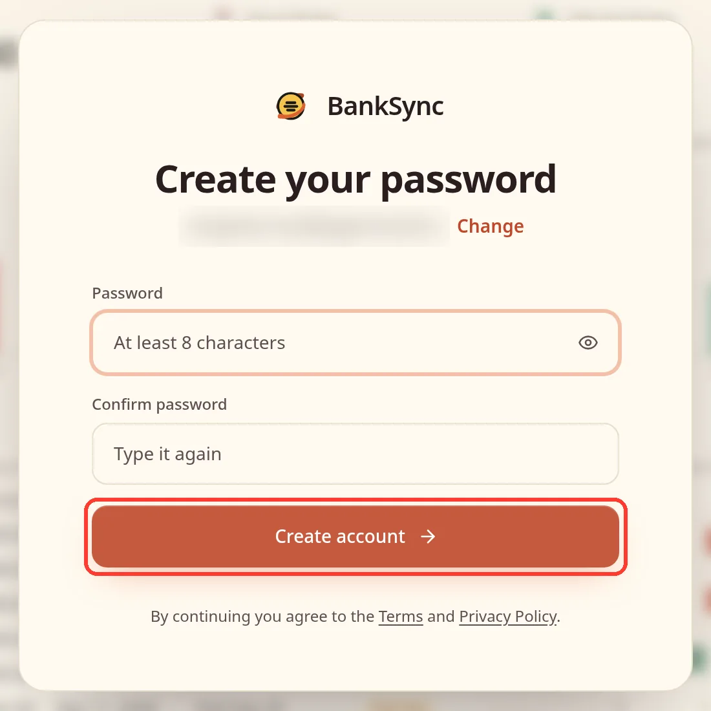
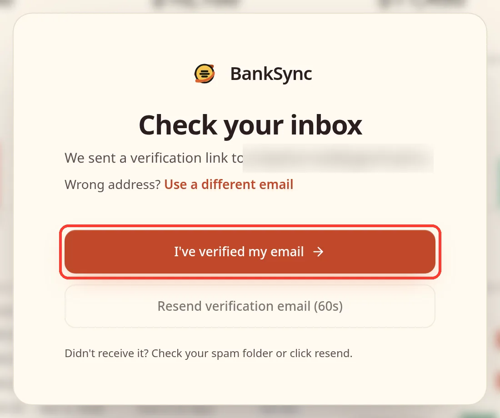
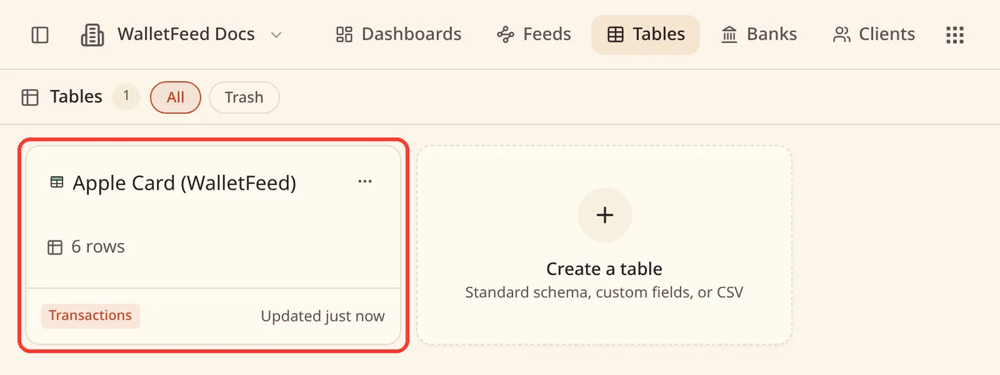
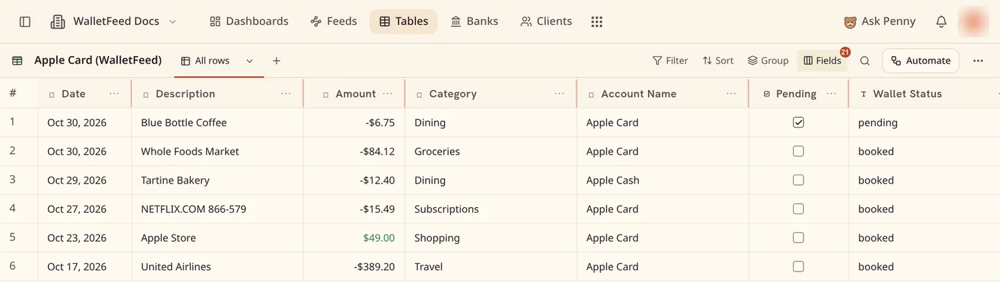
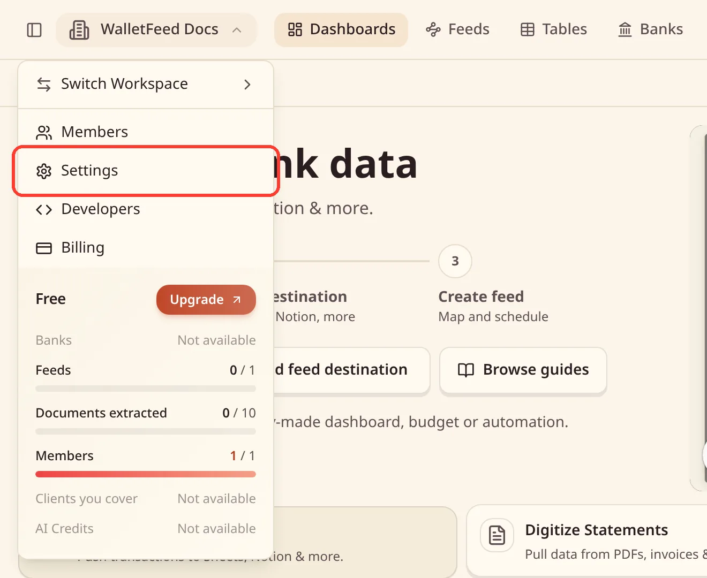
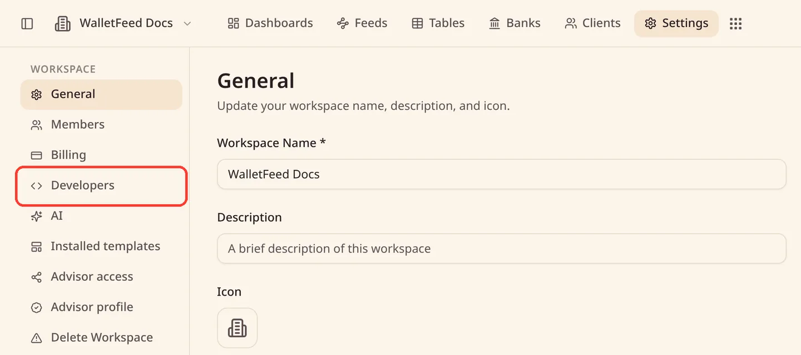
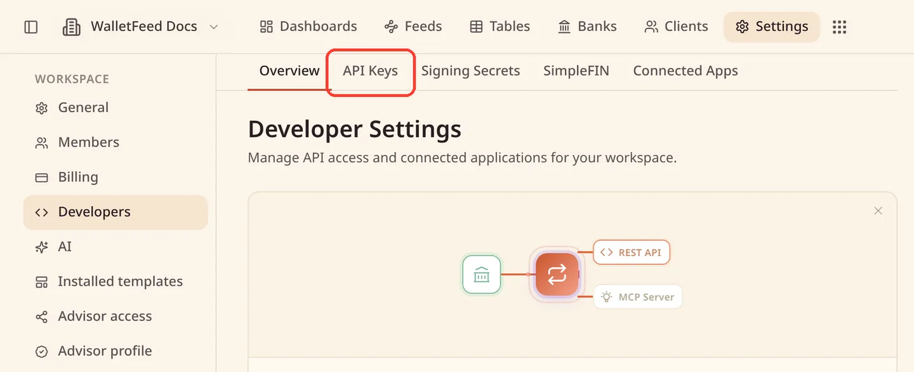
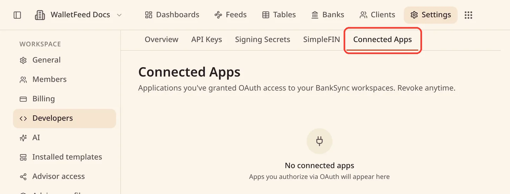
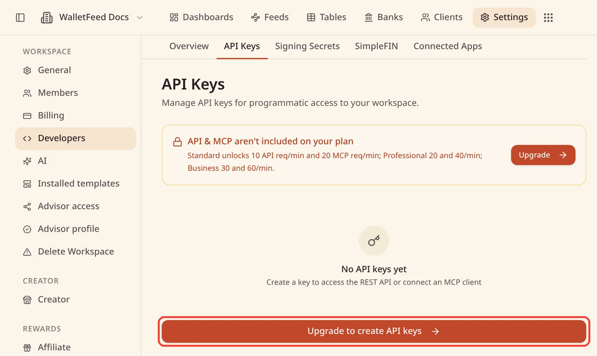

Send Apple Card transactions to BankSync
WalletFeed sends your Apple Card, Apple Cash and Savings transactions from your iPhone to a table in BankSync. Then your AI agents can read the table through BankSync's MCP tools or its REST API.
You can connect with Sign In with BankSync, or with a BankSync API key.
Before you start
You must have these items:
- An iPhone with iOS 26 or a newer version. WalletFeed is available only in the US.
- WalletFeed, with access to your Wallet accounts. Refer to Choose the Wallet accounts WalletFeed reads.
- WalletFeed Pro, which is necessary for destinations. WalletFeed Pro is a subscription with a 1-week free trial, or a one-time Lifetime purchase.
- A BankSync account. If you do not have one, you can make it when you sign in from WalletFeed.
- Owner or admin access to your BankSync workspace.
- A workspace that can have one more table. On the Free plan, a workspace can have only one table.
- For an API key, BankSync's Standard plan or higher.
Step 1: Open BankSync in WalletFeed
-
On your iPhone, open WalletFeed and tap Destinations.
-
Tap + at the top of the screen.

-
In the Budgeting section, tap BankSync.

If you do not have WalletFeed Pro, WalletFeed shows the WalletFeed Pro screen before the BankSync form.
Step 2: Sign in with BankSync
Sign In with BankSync is available on all BankSync plans, which include the Free plan. With Sign In with BankSync, WalletFeed can see only its Apple Card table.
Sign In with BankSync goes through WalletFeed's referral link. The form tells you this with the text "WalletFeed may earn a commission if you pay for BankSync."
-
Tap Sign In with BankSync.

-
On the BankSync page, tap Continue with Google, or type your email address in Email and tap Continue with email.

-
If you have a BankSync account, complete the sign-in.
-
If you do not have a BankSync account, do these steps:
-
Type a password in Password and in Confirm password.
-
Tap Create account.

-
In Mail, open the email "Verify your email for BankSync" and tap its link.
-
Go back to WalletFeed and tap I've verified my email.

-
-
On the BankSync page about WalletFeed, give your approval as the owner or an admin of the workspace.
BankSync adds WalletFeed to the workspace and makes the Apple Card table. WalletFeed waits a maximum of approximately 30 seconds for the table. Then the form shows Signed In and your workspace.
-
Tap Add.
Step 3: Start the first sync
After you tap Add, WalletFeed shows the message "Send Transactions to BankSync?". The message tells you the data that BankSync receives, the Wallet accounts, and the date that the transactions start from.
- Read the message.
- Tap Send.
If you tap Cancel, WalletFeed removes BankSync from your destinations.
Step 4: Find the table in BankSync
-
On a computer, go to app.banksync.io and sign in.
-
Click Tables at the top of the page.
-
Click the Apple Card table. If you used an API key, the table has the name that you typed in WalletFeed.

-
Optional: To see only the columns that have data, click Fields and remove the empty columns from the view.

Connect with an API key
An API key is an alternative to Sign In with BankSync. API keys are available only on BankSync's Standard plan or higher. With a key, WalletFeed makes the table, with the name that you type.
The screenshots show BankSync in a web browser on a computer.
Make an API key in BankSync
-
On a computer, go to app.banksync.io and sign in as the owner or an admin of the workspace.
-
Click the workspace name at the top left of the page.
-
Click Settings.

-
In the sidebar, in the WORKSPACE group, click Developers.

-
Click the API Keys tab.

-
Click Create Key.
-
In Key Name, type
WalletFeed. -
In Expiration, select 1 year or Never.
At first, BankSync selects 90 days. After that period, the key is expired and WalletFeed cannot send to BankSync.
-
In Permissions, in the tables row, select read and write.
-
Click Create API Key.
-
Click the Copy to clipboard button adjacent to the
bsk_key. -
Click Done.
Add the key in WalletFeed
-
On your iPhone, open the BankSync form. Refer to Step 1.
-
Tap Use an API Key Instead.
-
Paste the key in API Key.
-
Optional: In Table, type a different name for the table.
At first, Table contains Apple Card (WalletFeed).
-
Tap Add.
-
In the message "Send Transactions to BankSync?", tap Send.
Data that BankSync receives
WalletFeed writes one row for each transaction. The table that follows shows the BankSync column for each part of a Wallet transaction.
| Data from Wallet | BankSync column |
|---|---|
| The transaction ID | ID |
| The posted date, or the purchase date while the charge is pending | Date |
| The purchase date | Authorized Date |
| The value, less than 0 for a purchase and more than 0 for a credit, for example a refund | Amount |
| The value of a purchase, or 0 | Debit Amount |
| The value of a credit, or 0 | Credit Amount |
| The currency, for example USD | Currency |
| The description that Wallet shows | Description |
| The card statement text | Original Description |
| The merchant name, if Wallet has one | Merchant Name |
| The category, for example Dining or Groceries | Category |
| The account name, for example Apple Card or Apple Cash | Account Name |
| Selected while the charge is pending | Pending |
The Wallet status, for example pending or booked |
Wallet Status |
| The merchant category code | MCC |
| For a purchase in a different currency, the value in that currency | Foreign Amount |
| For a purchase in a different currency, that currency | Foreign Currency |
BankSync's transactions table has more columns, for example Card Last 4 and Bank. WalletFeed does not put data in them.
Read the table with an AI agent
BankSync has a REST API and an MCP server. An AI agent that you connect to BankSync can read the Apple Card table with the BankSync table tools, for example query_table_rows and aggregate_table_rows. Thus the agent can see your Apple Card transactions together with your other banks in BankSync.
- BankSync includes API and MCP access on the Standard plan or higher.
- On the Free plan, the API Keys tab shows "API & MCP aren't included on your plan".
- To connect an AI agent, make an API key for the agent on the API Keys tab. BankSync tells you "Create a key to access the REST API or connect an MCP client".
For more information, refer to BankSync's guide to API keys.
Sync times and pending charges
- While WalletFeed is open, BankSync receives changes in seconds.
- When WalletFeed is closed, iOS starts WalletFeed in approximately 1 hour or less after a change in Wallet. This occurs only if Background Sync is on.
- BankSync receives a pending charge with Pending selected. When the charge posts, WalletFeed changes the same row. Date changes to the posted date, and Pending is not selected.
- A refund gets a new row, with a value of more than 0 in Amount.
- If a pending charge does not post, WalletFeed removes its row. BankSync moves the row to its trash.
Send previous transactions
A new destination also receives previous transactions, from the start date in Settings › Sync › Initial History. Initial History is All until you change it. On the Free plan, a BankSync workspace can have a maximum of 5,000 rows in all its tables.
To send more previous transactions after you add BankSync, use Send History. Refer to Send previous transactions.
- In WalletFeed, tap Destinations.
- Tap your BankSync destination.
- Tap Send History.
- Tap 30 Days, 90 Days, 1 Year or All.
To stop, tap Send History, then tap Stop Sending.
Change or remove the destination
To change the destination, tap Destinations in WalletFeed, then tap your BankSync destination. Its name is "BankSync ·" and then the name of your BankSync workspace.
- To send only some transactions, turn on Filter. Refer to Choose what a destination receives.
- To stop the sync for a period, turn off Enabled.
- To change the name, type a new name in Name.
- If the destination uses an API key, tap Replace Key to use a new key. Then paste the key and tap Replace.
- If the destination uses Sign In with BankSync, tap Sign In Again to sign in again.
- To remove the destination, tap Delete, then tap Delete again.
When you remove the destination, the table and its rows stay in BankSync. WalletFeed tells you "Transactions already sent stay at the destination."
To remove the access that WalletFeed has to your workspace, go to Settings › Developers in BankSync. The Connected Apps tab shows the apps that have your approval. The API Keys tab shows your keys.

If a problem occurs
If BankSync shows "Upgrade to create API keys"
The Free and Starter plans do not include API keys.

- In WalletFeed, tap Sign In with BankSync Instead.
- Do the steps in Step 2.
As an alternative, change to the Standard plan or higher in BankSync.
If WalletFeed shows "Key rejected"
BankSync did not accept the key. Possibly the key is incorrect or expired, or it does not have read and write in the tables row. Also, the Free and Starter plans do not include API keys.
- Make a new key. Refer to Make an API key in BankSync.
- In WalletFeed, paste the new key in API Key, or tap Replace Key on the destination.
If WalletFeed shows "hasn't created or shared the Apple Card table"
The workspace has the maximum number of tables for its plan, or BankSync did not make the table in time. WalletFeed tells you the limit of your plan, for example "The Free plan allows one table."
The table limit is 1 on Free, 2 on Starter, 5 on Standard, 25 on Professional and 100 on Business.
- Tap Open BankSync.
- Delete a table that you do not use, or change to a plan that has more tables.
- In WalletFeed, tap Try Again.
- If WalletFeed continues to show the message, tap Sign In Again.
If BankSync does not accept the sign-in
Only the owner or an admin of the workspace can give approval to WalletFeed. WalletFeed shows "BankSync didn't accept the sign-in", or BankSync shows a message on its page.
- Tap Sign In with BankSync again.
- Sign in as the owner or an admin of the workspace.
- If BankSync does not accept the sign-in again, use an API key. Refer to Connect with an API key.
If the destination shows "Authentication failed"
BankSync did not accept the key or the sign-in. For example, the API key is expired.
- In WalletFeed, tap Destinations, then tap your BankSync destination.
- If the destination uses an API key, make a new key, then tap Replace Key and paste it.
- If the destination uses Sign In with BankSync, tap Sign In Again.
WalletFeed can also show "Signed out. Sign in again in the destination's settings." Do step 3 to correct this.
If BankSync shows only its logo after the email link
After you open the link in the BankSync email, the BankSync page can stay on the BankSync logo.
- Reload the page.
If BankSync has no Tables tab
BankSync's documentation tells you that Tables is in beta, and that BankSync turns it on for each workspace.
- Contact BankSync and tell them that your workspace has no Tables tab.
If many columns in the table are empty
A BankSync transactions table has 24 columns, and WalletFeed puts data in 12 of them. WalletFeed also adds 5 columns, for example Pending and Wallet Status, at the right end of the table.
- In the table, click Fields.
- Remove the empty columns from the view.
- Click Save view.
Related
Updated October 30, 2026